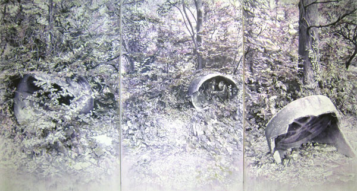
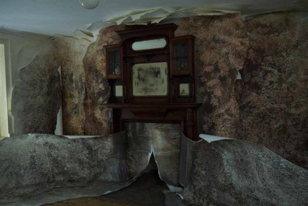

-
In Conversation With An Artist & Her Mother
by Brian Dupont November 15, 2012
Juliette Losq is a London based artist who renders abject and abandoned landscapes ripe with literary allusion, hidden presences, and haunting emotional undertones. They employ a sophisticated, technical approach to image making that push beyond antiquated notions of medium specificity. The tools and techniques of drawing, painting and printmaking are all present. Both her process and imagery require that the viewer look closer to see exactly what it is they are looking at.
At the opening of her recent exhibition at Theodore Art she was accompanied by her mother, Mary Losq, who regaled those in attendance with stories and interpretations of Juliette’s work. The artist/parent relationship can be a fraught one, but also offers a unique opportunity to understand where the artist is coming from. With an eye towards keeping the number of embarrassing childhood details to a minimum, what follows is a collaged conversation with mother and daughter.
Brian Dupont: Juliette, your fascination with abandoned areas and derelict zones are the sorts of places kids like to play, were these places you explored when younger?
Juliette Losq: I grew up in the suburbs of London, in a small town called Hornchurch, which borders on the East End and Essex. It is not an attractive town but it does have a lot of open spaces and parks, which I used to visit with my brother and friends, and we would set up camps. Everything was a bit rundown and grey, so finding a clump of trees was like discovering a forest with a huge potential to explore.
Losq’s ‘Piaculum,’ 2012. courtesy of Theodore Art, Brooklyn.
BD: Mary, you’ve been following Juliette’s development as an artist longer than anyone. What did her first forays into art look like? What do you remember about her work at the beginning?
Mary Losq: She was always drawing and painting and particularly liked to draw family and pets. When she had learnt to write she used to make up stories and illustrate them.
BD: Do you remember any of the stories? While many kids narrate their drawing, it becomes more interesting given the literary elements in Juliette’s work. Were there any nascent threads that you recognize looking at her work now?
ML: When she was 5, she started to write a set of stories called ‘Minnie Mouse and Benny Bluebird.’ There were eight stories altogether and she introduced a few characters such as ‘Sly Fox’ and ‘Wily Weasel.’ These were the villains in her stories. Now and again, ‘villains,’ in the form of mythological creatures, appear in her work.
BD How did your engagement with art start? Presuming a childhood interest, when did you start to think about art to pursue in adulthood? How did your Mom help encourage you to pursue art?
JL: I was discouraged from studying art and encouraged towards more academic subjects at school. They couldn’t find a space for me on the school timetable so I studied for my A – Level art exam at home with my father, who was an art teacher at the time. I studied English at Cambridge but always regretted having not gone to art school instead. I kept making work in my free time and took part in student shows, before moving across in to the History of Art Department, and gradually working my way back towards Fine Art in that way. Having said that I enjoyed studying both English and History of Art and there are direct links with both disciplines in my work, which often contains literary references and draws upon earlier periods of art in imagery and technique.
BD: What were your thoughts of Julliet’s education? What did you think of her continuing on to studying art after originally studying art history?
ML: Originally, I thought it risky to give up a job in the city to pursue a further course of study. However, I now realise that she had to follow her instinct and, in this case, it proved right.…
JL: Both my parents were initially happy that I did not go to art school. I think they had hopes that I would work in something more lucrative. They didn’t specifically dissuade me from giving up my job in the City to go to art school but they were worried. However, they are now very supportive and often turn up to shows in London — and now in New York! Both of them are creative people (my mother teaches music) and I was taken to museums and galleries from a very young age.
BD: You originally went to university to study art history, and then continued on to studio courses. How did you wind up taking this path? It is more circuitous than the traditional path for an exhibiting artist. Did something push you out of studying art and into making it?
JL: I think what eventually pushed me back into making art was a frustration at looking at art in museums and galleries and going into great detail about the technicalities of how it was made without actually physically making anything myself. During my MA in Eighteenth Century British and French Art at the Courtauld I found myself more drawn to the technical side of the work than the Historical context. I started going to evening classes to try my hand at some of the techniques I was studying and got the bug.
BD: The approach to space and discovery can also be very child-like, with points of view akin to watching from hidden vantage points. But just as the child might watch, there are also hidden presences that are watching (of the sort one might think adults would miss but that children or innocents might see). Do you have an interest in this dichotomy? How do you think about the viewer interpreting or arriving at a narrative for your work?
JL: One of the things I enjoyed about studying art of the eighteenth century in particular is the way that the viewer often occupies a similar position to the reader of the novels that were emerging at that time. I’m thinking of Hogarth in particular: his character development across series paintings (The Harlot’s and Rake’s Progresses) and his inclusion of myriad visual clues that generate stories within stories. This interest has carried over, to an extent, to my own work. Just as I read into a neglected landscape, projecting activities and images onto it like a screen, I want to provide the opportunity for the viewer to do this with the work I make. Sometimes the scene is more directed than others, for example where I include characters lifted from the internet or Victorian crime journals, as in Myriorama. Often I deliberately choose viewpoints and imagery that fool the viewer into thinking such a character might be hiding in there somewhere, waiting for them to discover it themselves.
BD: Mary, there is an undertone of unease and a fragmented reality in the scenes she presents, how do you engage with her subject matter?
ML: I tend to look for the hidden creatures, objects etc. within the painting.
Losq’s ‘Myriorama,’ 2012. courtesy of Theodore Art, Brooklyn.
BD: In the current show at Theodore Art, the large drawing hides many such presences, but the smaller works set the unknown figure right out in the open. What is it, and what brought it out into the open (so to speak)? Is it more disconcerting that they’re not “hiding” and are rather out in the open?
ML: No. It’s just a new way of looking at things.
JL: I was thinking about the sense that these images of marginal areas in the small works could almost be from any era. They are only discernible from their original industrial functions as being of the present, perhaps, because they have become so overgrown and, to an extent, peaceful. But I also find that tranquility eerie: they could just as easily be from some dystopian future, where everything looks largely the same but with minor disruptions or differences. The unknown figures are deliberately nonspecific, definitely organic. They could be living organisms or the pupae or entrails left behind by something now departed.
BD: The sense of narrative can seems to come from an underlying source in genre fiction, rather than documentation. What appeals to you about the creepiness or unreality found in science fiction or horror? What do you like about superimposing this anxiety on an otherwise pastoral setting?
JL: Maybe it’s having grown up in the suburbs where everything is dull and there are no extremes of nature, but I always project creatures onto a given landscape. If you show me a still pond I will imagine something rearing up out of it. I also grew up on a diet of horror films, as my father was a fan of the Universal films, and any kind of schlock horror really.
BD: Your technique of layering and masking can be stunningly complex for the simplicity that is often ascribed to drawing or watercolor. How has your engagement with the materials grown and evolved? What do you find in “drawing” that you don’t in “painting” or “photography?”
JL: People are often confused as to whether they are looking at drawings, prints or paintings when they see my work in the flesh. I’ve borrowed parts from both watercolour painting and the process of etching. I build up the work like you would an etching plate, masking off areas then inking over them until the final image is ‘developed’ and revealed. I then add further detail and watercolour washes over this. I enjoy hovering between the different disciplines. Watercolour historically has connotations of feminine domesticity, or as being a sketching medium that is used in small scale preparatory works. I like the idea of turning these presumptions on their head in terms of the scale of the work and, to an extent, the disruptions to the landscape that I introduce.
Losq in ‘Another Room.’ courtesy of Room Artspace, London.
BD: You’ve also integrated paper as an installation material; how did this come about?
JL: The paper installation side of things has come about as a way of developing my interest in recreating the experience of being in these landscapes that I’m drawn to, in the sense that I can create encompassing environments.
Having landscapes that evolve from objects in some ways replicates the process of my imagination, as I’m envisaging and creating interiors that have become overrun or that are breaking out into the exterior world.
BD: There’s a wonderful feeling of layers of old wallpaper peeling and shredding in your installation at Room Artspace. It’s an urban interior version of the abandoned spaces in your other work; how do you think the shift in setting affects your approach to making the work or the emotional content?
JL: The piece at Room was made specifically in response to that setting, with the dimensions and the derelict nature of the house in mind. It happened that I had a fireplace, as I accumulate objects that could potentially be included in future works. I also had imagery of some abandoned and overgrown archways from a military training site in Essex that I could envisage being integrated with the structure of the fireplace. I work by making visual links between different images — photos and found images — and objects. In this case I had the opportunity to extend this process to the environment in which the work was to be shown, which is the first time this has really happened.
ML: I am amazed at the method of composition, for example, the way that furniture can be part of a landscape. I am continually amazed by the development of her work. I find it interesting that rather than just painting derelict landscapes, which stand as works on their own, she now introduces unrelated creatures and objects into the work. I like the way she uses literary references as titles for her work to bring the various elements together.
BD: Juliette, what would you like to do with your work that you haven’t already?
JL: Building on the experience of the installation at Room I would like to make more paper installations. The challenge is now developing the work technically in order to move this process on. I’m interested in developing the sculptural possibilities of paper more. Maybe it’s time for another course!
Another Room with an installation by Julliet Losq is on view through November 24, at Room Artspace, 30 Manchester Street, London.
Juliette Losq: Lucaria is has been extended through December 16th at Theodore Art, 56 Bogart Street, Brooklyn.